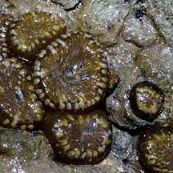
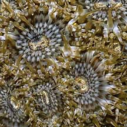
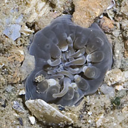
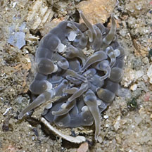
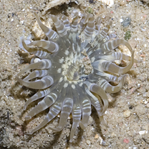
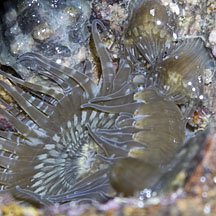
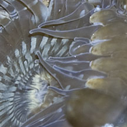
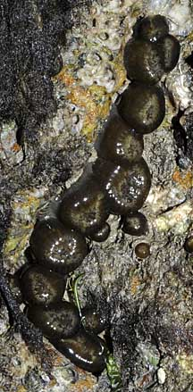

|
|
| sea anemones text index | photo index |
| Phylum Cnidaria > Class Anthozoa > Subclass Zoantharia/Hexacorallia > Order Actiniaria |
| Banded
bead anemone Anthopleura sp.* Family Actiniidae updated Jul 2024
Where seen? These small anemones are often seen on our rocky areas that are exposed even at moderate tides. Usually in clusters of many individuals. Crowded near the base of boulders, in crevices and cracks of the boulders and even in the sand nearby. When exposed to air at low tide, it tucks its tentacles into its body column so it looks like a bead of jelly. Those in the sand may retract completely, leaving only little holes. It is easy to miss these small delicate animals and to accidentally step on them. To see one with the tentacles expanded at low tide, look for pools where some might still remain submerged. Features: Diameter with tentacles expanded 1-2cm. One ring of tapering tentacles with a banded pattern. The oral disk is relatively large compared to the tentacles and is sometimes patterned. The entire animal is usually in shades of brown and beige. Although often found in groups of many individuals packed close to one another, it is a solitary polyp and not a colonial animal. There are several species of Anthopleura that may be found near one another and are hard to distinguish in the field. Anthopleura handi: Occurs in smaller numbers of larger individuals. The anemone and its veruccae are a dull grey green. Anthopleura dixoniana: Occurs in large numbers of smaller individuals. The anemone's oral disk has a distinctive pale-dark chequer-board pattern. It is darker with dark body column and verrucae that are lighter than the body column. Anthopleura nigrescens: Compared to A. dixoniana, individuals are larger with a darker body column, more conspicuous verrucae and the bumps around the top of the body column under the tentacles (called acrorhagi) have white tips. Status and threats: As at 2024, A. handi, A. dixoniana, A. nigrescens are assessed not to be approaching the criteria for being listed among the threatened animals in Singapore. Another bead anemone sometimes seen on our shores is the Pink-spotted bead anemone (Anthopleura buddemeieri). It looks very different. Pale body column with red spots along the entire length, tentacles grey with a reddish cast. |
 Chek Jawa, Oct 04 |
 Chek Jawa, Mar 05 |
 Chek Jawa, Mar 05 |
|
 Anthopleura dixoniana Punggol, Jun 12 |
 |
 |
|
 Anthopleura dixoniana  St. John's Island |
 Changi, Oct 09 Often found in crevices on large rocks. |
*Species are difficult to positively identify without close examination.
On this website, they are grouped by external features for convenience of display.
| Banded bead anemones on Singapore shores |
On wildsingapore
flickr
|
| Other sightings on Singapore shores |
|
Links
References
|